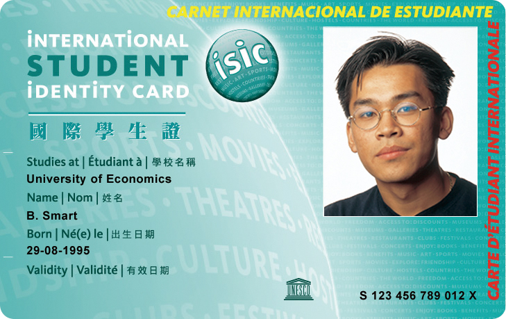
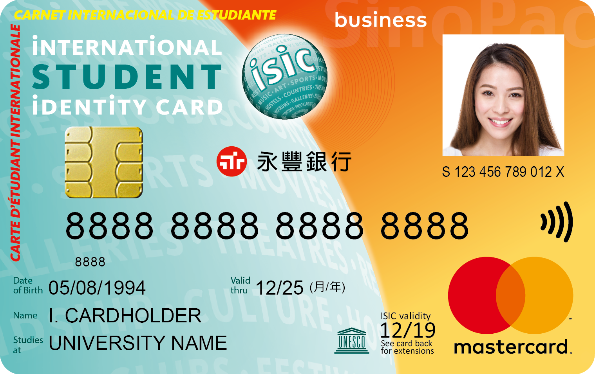

國際學生旅遊聯盟(ISTC)成立於1949，聯盟最初是由歐洲大學學生組成，專門為學生提供能力範圍以內的旅遊協助。至今，ISTC轄下已有5,000多個專為學生旅遊而服務的辦事處分佈全球130個國家，他們共同為實現聯盟的宗旨而努力。聯盟專門為學生提供機票、保險、交通、文化交流和簽發國際認可的學生證等服務。推廣ISIC國際學生證最主要的目的，是希望各國青年學生能透過一張國際學生證件，不分國家、種族、性別、宗教，都能走出國門、行遍天下，認識不同國家的文化並學習尊重不同文化，降低因文化差異所可能引起的衝突，進而促進世界和平！
【折扣與優惠】
國際學生證在台灣或是國外皆是您享受極大的優惠的通行證。
是為國際唯一認可的學生證，超過50年的歷史，讓國際學生證持卡者成為實至名歸的全球會員俱樂部。
每一年來自全球125個國家，超過5百萬的學生都在使用國際學生證帶來的優惠。
國際學生證 (ISIC) 永豐國際學生證Debit卡 (ISIC Debit Card)
 